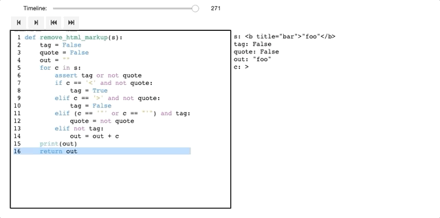

Project: Time Travel Debugger#
In this project you will build your own Time Travel Debugger for Python. Please read the Chapter on Debuggers beforehand, notably Exercise 1.
Update[26.11.2020]: the project description was amended to include answers to most of the student’s questions.
Clarifications are highlighted with blue color.
Changes/additions are highlighted with red color.
A time travel debugger records a log of the process execution (including call stack and values of all variables at each step), so that it is possible to run it later with both forward and backward commands. The interactive session does not execute the code statements, but just replays all actions taken from the recorded execution. A time travel debugger can restore a full snapshot of each program state at any point in time and either continue the execution from then on, or run the program backward. As normal execution changes values of variables along the run, the backward execution reverts variables to the previous values and “un-executes” functions.
The project can be approached in two ways: either as a single-person project or a pair project. The single-person project comprises the implementation of a command line interface, whereas the pair project requires the implementation of a graphical user interface.
To be successful, you must obtain at least 15 points by implementing features listed in “Must-have Requirements”; otherwise, you will not be awarded any points for the project.
To fully enjoy coding (and get maximum points) feel free to additionally implement some (or all) features from the “May-Have Requirements”.
Submission details#
The deadline for this project is on the 18th of December, 2020 at 11:59pm CET
All files packaged in a zip archive must be uploaded via the CMS system.
The project should be a self-contained bundle with the TimeTravelDebugger.ipynb Jupyter notebook and supplementary files.
General Requirements#
The project should be implemented in a Jupyter notebook with a step-by-step explanation of the implemented features (like the notebooks from the lecture). The notebook should also include a “Presentation” section containing demo interactions which show how to use each feature.
Your project should come with a working environment via either virtualenv (requirements.txt file) or pipenv (Pipfile.lock file) tools.
Your code should follow PEP 8 style conventions. You can use %%pycodestyle command from the pycodestyle package to check files for PEP 8 compliance.
The time travel debugger should be implemented as a class that can be executed as follows:
with TimeTravelDebugger():
foo(args)
where foo(args) can be an arbitrary function under debugging, implemented either in the same notebook or imported from another file.
Do not let the debugger escape the context and also debug commands outside the with block (e.g., methods of the Jupyter framework).
Part 1: Command-Line Debugger#
If you work as a single-person, this is the part you will have to build.
The implementation should include an interactive command line interface like the one presented in the Chapter on Debugging. Make use of the Debugger class, notably its execute() infrastructure, to easily tie commands to methods.
Must-Have Requirements (20 Points)#
Your time travel debugger should support the following features:
Basics#
/R1/
quitExit the interactive session (or resume execution until function return)/R2/
helpPrints all available commands and their description and arguments/R3/ Missing or bad arguments should result in specific error messages.
Call Stack#
/R14/ Print call stack:
/R141/
wherePrint the whole call stack/R142/
where <number>Print the<number>of leading and trailing lines from the call stack surrounding the current frame if any.
/R15/ Navigate the call stack
upanddownMove up (and down) the call stack towards callers (and callees): print the code of the previous (next) frame and mark the currently executed line.
Inspecting Code and Variables#
/R16/ Print the source code around the current line (with the current line marked)
/R161/
listPrint 2 lines before and 2 lines after the current line/R162/
list <number>Print<number>lines before and<number>lines after the current line/R163/
list <above> <below>Print<above>lines before and<below>lines after the current lineExpl: Lines are limited to the current function body
/R17/ Inspect the value of a variable
/R171/
printPrint values of all local variables (including values of member variables)/R172/
print <var_name>Print the value of a variable with name<var_name>. If the variable<var_name>is not defined, print an error message.
/R18/
print <expr>Like
print <var_name>, but allow for arbitrary Python expressionsThe code expression should be evaluated in the current environment of the code being debugged.
Keep in mind that this requires to evaluate the expression during the interactive session, which may produce exceptions.
Watchpoints#
/R19/ Watchpoints:
/R190/
watch <var_name>Creates a numbered watchpoint for the given variable: If its value changes after a navigation command, its value should be printed./R191/
watchShow all watchpoints and associated variables./R192/
unwatch <watch_id>Remove a watchpoint.
Breakpoints#
/R20/ Breakpoints:
/R201/
break <line_number>Create a numbered breakpoint at line with number<line_number>/R202/
break <function_name>Set a breakpoint which hits when a function with the name<function_name>is called (or returned in case of backward execution). The execution should stop at the beginning (or the end) of the function./R203/
break <file_name>:<function_name>Set a breakpoint which hits when a function with the name<function_name>in file<file_name>is called (or returned in case of backward execution). The execution should stop at the beginning (or the end) of the function./R204/
breakpointsDisplay all available breakpoints
Depending on the type of the breakpoint the output can be the following:
breakpoint_id line file_name:line_number is_active
breakpoint_id func file_name:func_name is_active
breakpoint_id cond file_name:line_number is_active cond_expression/R205/
delete <breakpoint_id>Delete a breakpoint with the index<breakpoint_id>from the list of breakpoints/R206/
disable <breakpoint_id>Suspend a breakpoint with the index<breakpoint_id>from the list of breakpoints/R207/
enable <breakpoint_id>Re-enable a breakpoint with the index<breakpoint_id>from the list of breakpoints/R208/
cond <line> <condition>. Conditional breakpoints. Set a breakpoint at which the execution is stopped at line<line>if a condition<condition>is true. A condition can include local variables (e.g.,tag == "b"ortag.startswith(b)), but not function calls from a debugged program.Hint: keep in mind that breakpoints may be set in different modules (files) and sometimes cannot be set (e.g., in for comment lines).
Expl: The execution should stop at each active breakpoint despite the command (until <line>, continue, etc.)
May-Have Requirements (10 Points)#
Fulfilling these additional requirements gains extra points.
Extended Watchpoints#
watch <expression>Likewatch <variable>, but allow for arbitrary expressions.
Extended Breakpoints#
cond <line> <expression_code>Conditional-breakpoints with complex expressions (see conditional-breakpoints from Must-haves and expression)bpafter <breakpoint_id> <line_number>Disable a breakpoint after hitting another specified breakpointbpuntil <breakpoint_id> <line_number>Disable a breakpoint until hitting another specified breakpointStep into my code: inspect function calls only if they are defined in modules located in the current folder
Inspect members of complex objects
bpwrite <variable_name>Write access breakpoints A breakpoint hits each time a certain variable<variable_name>is changedalias <breakpoint_id> <breakpoint_name>Create aliases for breakpoints (refer to a breakpoint by name instead of an index)
The ‘breakpoints’ command should then output breakpoint names instead of breakpoint ids when availableSupport for inline breakpoints (e.g., for lambda functions, list comprehension) if a line contains multiple statements such as
filter(lambda x: x % 2 == 0, [x**2 for x in range(10)])
More Features#
Watch I/O interaction
Stand-alone command line debugger, which can be used outside Jupyter notebooks
Some other cool feature of your own design
Assessing Requirements#
Your command line debugger will be evaluated by well-documented functionality as listed above.
A “well-documented” functionality has readable code whose effect is illustrated by at least one example in the notebook.
The functionality itself will be validated by a set of tests consisting of a series of commands with expected results. Here is an example of how to run your debugger with predefined commands; you can also use this in your notebook to demonstrate features.
import bookutils.setup
def remove_html_markup(s): # type: ignore
tag = False
quote = False
out = ""
for c in s:
if c == '<' and not quote:
tag = True
elif c == '>' and not quote:
tag = False
elif c == '"' or c == "'" and tag:
quote = not quote
elif not tag:
out = out + c
return out
from Debugger import Debugger
from bookutils import next_inputs
class TimeTravelDebugger(Debugger):
pass
next_inputs(["step", "step", "step", "print s", "continue"])
['step', 'step', 'step', 'print s', 'continue']
with TimeTravelDebugger():
remove_html_markup("foo")
Calling remove_html_markup(s = 'foo')
2 tag = False
# tag = False
3 quote = False
# quote = False
4 out = ""
s = 'foo'
Example Interaction#
In this section, we give you some sample interactions.
next_inputs(["break 8", "break 16", "step", "continue", "print c", "continue", "quit"])
['break 8', 'break 16', 'step', 'continue', 'print c', 'continue', 'quit']
with TimeTravelDebugger():
remove_html_markup("foo")
Calling remove_html_markup(s = 'foo')
Breakpoints: {8}
Breakpoints: {8, 16}
2 tag = False
# tag = False, quote = False, out = 'foo', c = 'o'
16 return out
c = 'o'
remove_html_markup() returns 'foo'
next_inputs(["break 6", "watch out", "continue", "continue", "continue", "continue", "continue"])
['break 6',
'watch out',
'continue',
'continue',
'continue',
'continue',
'continue']
with TimeTravelDebugger():
remove_html_markup("foo")
Calling remove_html_markup(s = 'foo')
Breakpoints: {6}
Unknown command 'watch'. Possible commands are:
assign -- Use as 'assign VAR=VALUE'. Assign VALUE to local variable VAR.
break -- Set a breakpoint in given line. If no line is given, list all breakpoints
continue -- Resume execution
delete -- Delete breakpoint in line given by `arg`.
Without given line, clear all breakpoints
help -- Give help on given `command`. If no command is given, give help on all
list -- Show current function. If `arg` is given, show its source code.
print -- Print an expression. If no expression is given, print all variables
quit -- Finish execution
step -- Execute up to the next line
# tag = False, quote = False, out = ''
6 for c in s:
# out = 'f', c = 'f'
6 for c in s:
# out = 'fo', c = 'o'
6 for c in s:
# out = 'foo'
6 for c in s:
next_inputs(["break 16", "watch out", "continue", "start", "continue", "continue"])
['break 16', 'watch out', 'continue', 'start', 'continue', 'continue']
with TimeTravelDebugger():
remove_html_markup("foo")
Calling remove_html_markup(s = 'foo')
Breakpoints: {16}
Unknown command 'watch'. Possible commands are:
assign -- Use as 'assign VAR=VALUE'. Assign VALUE to local variable VAR.
break -- Set a breakpoint in given line. If no line is given, list all breakpoints
continue -- Resume execution
delete -- Delete breakpoint in line given by `arg`.
Without given line, clear all breakpoints
help -- Give help on given `command`. If no command is given, give help on all
list -- Show current function. If `arg` is given, show its source code.
print -- Print an expression. If no expression is given, print all variables
quit -- Finish execution
step -- Execute up to the next line
# tag = False, quote = False, out = 'foo', c = 'o'
16 return out
Unknown command 'start'. Possible commands are:
assign -- Use as 'assign VAR=VALUE'. Assign VALUE to local variable VAR.
break -- Set a breakpoint in given line. If no line is given, list all breakpoints
continue -- Resume execution
delete -- Delete breakpoint in line given by `arg`.
Without given line, clear all breakpoints
help -- Give help on given `command`. If no command is given, give help on all
list -- Show current function. If `arg` is given, show its source code.
print -- Print an expression. If no expression is given, print all variables
quit -- Finish execution
step -- Execute up to the next line
remove_html_markup() returns 'foo'
next_inputs(["until 16", "print out", "continue", "quit"])
['until 16', 'print out', 'continue', 'quit']
with TimeTravelDebugger():
remove_html_markup("foo")
Calling remove_html_markup(s = 'foo')
Unknown command 'until'. Possible commands are:
assign -- Use as 'assign VAR=VALUE'. Assign VALUE to local variable VAR.
break -- Set a breakpoint in given line. If no line is given, list all breakpoints
continue -- Resume execution
delete -- Delete breakpoint in line given by `arg`.
Without given line, clear all breakpoints
help -- Give help on given `command`. If no command is given, give help on all
list -- Show current function. If `arg` is given, show its source code.
print -- Print an expression. If no expression is given, print all variables
quit -- Finish execution
step -- Execute up to the next line
NameError: name 'out' is not defined
next_inputs(["break 6", "watch out", "continue", "where", "up", "list", "delete 0", "continue", "quit"])
['quit',
'break 6',
'watch out',
'continue',
'where',
'up',
'list',
'delete 0',
'continue',
'quit']
with TimeTravelDebugger():
remove_html_markup("foo")
Calling remove_html_markup(s = 'foo')
Part 2: GUI-Based Debugger#
If you work as a team of two, this is the part you will also have to build.
To create a GUI in Jupyter notebooks, one can follow two paths:
Use embeddings of plain HTML/JS into the notebook (see Exercise 3 in the chapter on interactive debuggers. This has the advantage of not requiring Python in the final result; your time travel debugger can execute in any browser. You may follow this path if you already have experience with Web design and programming.
Use Jupyter widgets to create a user interface. This has the advantage that you can use Python all along the way. Your debugger, however, can only be run in the notebook; not in, say, a Web page.
Your GUI-based time travel debugger should implement similar features as the command line debugger, but its functionality should be accessible via a graphical user interface (instead of typing in the commands).
For instance, a user may be able to step backward by clicking a ◀ button, or set a breakpoint by clicking on a line in the code view.
The “Presentation” section should include a video/YouTube (up to 1 min each) embedded in Jupyter Notebook, which shows a demo of each implemented feature.
Must-Have Requirements (20 Points):#
Note that your GUI need not implement all features of your command-line debugger; ease of use and discoverability have priority. Choose wisely!
The GUI-based debugger should allow inspecting and navigating through
/R31/ The source code currently being executed, where the current line and breakpoints are highlighted.
/R32/ Users should be able to scroll through the code of the current module.
/R33/ Variables.
/R34/ The list of watchpoints (if any).
/R35/ The call stack.
/R36/ The list of breakpoints (if any).
The debugger should provide the following controls:
/R37/ An interactive timeline (e.g., a slider) which allows moving along the execution back and forth.
/R38/ Automatic execution replay (forward and backward) at various speed
/R39/ Search for specific events in the timeline (a breakpoint hit, a variable changed etc.)
/R40/ Search results should be selectable by the user, moving the timeline to the associated event
Here is a demo of how a basic GUI may look like:

May-Have Requirements (10 Points):#
Fulfilling these additional requirements gains extra points.
Syntax-highlight the source code
Show values of the variables in the source code.
Show events (e.g., breakpoints) on the timeline.
Visualize and explore data structures.
Produce an interactive session which can be run uniquely with HTML + JavaScript, such that Python is not required (excludes the evaluation of expressions) (worth up to 10 points).
Implement the debugger as a custom Jupyter widget (worth up to 10 points).
Some other cool feature of your design.
Assessing Requirements#
Your interactive debugger will be evaluated for well-documented and discoverable functionality as listed above.
A “well-documented” functionality has readable code whose effect is described in the notebook (possibly with examples).
A “discoverable” functionality can be found quickly by ordinary users by exploring the GUI. Extra functionality (keyboard shortcuts, etc.) should be made available as part of a help screen or as a tutorial in your notebook.
The functionality itself will be validated manually by test users.
Example Notebook Structure#
Personal Information#
Start with these fields:
PROJECT_TYPE: int
NAME: Union[str, List[str]]
ID: Union[str, List[str]]
IMPLEMENTED: Set[str]
As an example:
PROJECT_TYPE = 1
NAME = "Riad Sattouf"
ID = "1234567"
or
PROJECT_TYPE = 2
NAME = ["Riad Sattouf", "Stan Cispas"]
ID = ["1234567", "1536589"]
IMPLEMENTED = set()
Implementation#
Contains the code with comments pointing to requirements
import bookutils.setup
from Debugger import Debugger
Feature /R17/:
/R171/: A print command that prints all variables of the current frame.
class TimeTravelDebugger(Debugger): # type: ignore
def print_command(self, arg: str = "") -> None:
vars = self.frame.f_locals
self.log("\n".join([f"{var} = {repr(vars[var])}" for var in vars]))
IMPLEMENTED.add("R171")
Presentation#
Examples (pointing to requirements, e.g. /R1/ /R2/, etc.)
from bookutils import next_inputs
def remove_html_markup(s): # type: ignore
tag = False
quote = False
out = ""
for c in s:
if c == '<' and not quote:
tag = True
elif c == '>' and not quote:
tag = False
elif c == '"' or c == "'" and tag:
quote = not quote
elif not tag:
out = out + c
return out
Feature /R17/:
/R171/: A print command allows printing all variables of the current frame.
The command sequence “step”, “step”, “step”, “print” should print three variables:
next_inputs(["step", "step", "step", "print", "quit"])
with TimeTravelDebugger():
remove_html_markup("foo")
Calling remove_html_markup(s = 'foo')
Breakpoints: {6}
Unknown command 'watch'. Possible commands are:
assign -- Use as 'assign VAR=VALUE'. Assign VALUE to local variable VAR.
break -- Set a breakpoint in given line. If no line is given, list all breakpoints
continue -- Resume execution
delete -- Delete breakpoint in line given by `arg`.
Without given line, clear all breakpoints
help -- Give help on given `command`. If no command is given, give help on all
list -- Show current function. If `arg` is given, show its source code.
print -- None
quit -- Finish execution
step -- Execute up to the next line
# tag = False, quote = False, out = ''
6 for c in s:
Unknown command 'where'. Possible commands are:
assign -- Use as 'assign VAR=VALUE'. Assign VALUE to local variable VAR.
break -- Set a breakpoint in given line. If no line is given, list all breakpoints
continue -- Resume execution
delete -- Delete breakpoint in line given by `arg`.
Without given line, clear all breakpoints
help -- Give help on given `command`. If no command is given, give help on all
list -- Show current function. If `arg` is given, show its source code.
print -- None
quit -- Finish execution
step -- Execute up to the next line
Unknown command 'up'. Possible commands are:
assign -- Use as 'assign VAR=VALUE'. Assign VALUE to local variable VAR.
break -- Set a breakpoint in given line. If no line is given, list all breakpoints
continue -- Resume execution
delete -- Delete breakpoint in line given by `arg`.
Without given line, clear all breakpoints
help -- Give help on given `command`. If no command is given, give help on all
list -- Show current function. If `arg` is given, show its source code.
print -- None
quit -- Finish execution
step -- Execute up to the next line
1 def remove_html_markup(s): # type: ignore
2 tag = False
3 quote = False
4 out = ""
5
6> for c in s:
7 if c == '<' and not quote:
8 tag = True
9 elif c == '>' and not quote:
10 tag = False
11 elif c == '"' or c == "'" and tag:
12 quote = not quote
13 elif not tag:
14 out = out + c
15
16 return out
No such breakpoint: 0
Breakpoints: {6}
# out = 'f', c = 'f'
6 for c in s:
The command sequence “step”, “step”, “print” should print just two variables:
next_inputs(["step", "step", "print", "quit"])
with TimeTravelDebugger():
remove_html_markup("foo")
Calling remove_html_markup(s = 'foo')
2 tag = False
# tag = False
3 quote = False
# quote = False
4 out = ""
s = 'foo'
tag = False
quote = False
Summary#
print(f"Implemented features: {IMPLEMENTED}")
Implemented features: {'R171'}